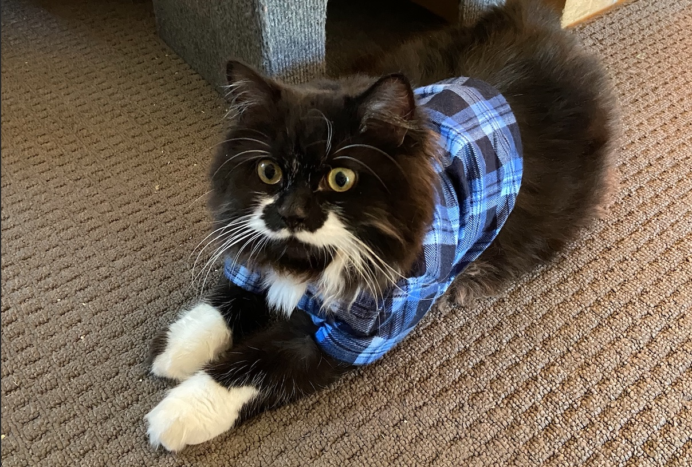

The Top 5 Signs Your Cat Might be a Bogan: A Purr-sonal Investigation
In the mysterious world of feline behavior, there are certain signs that your cat might be hiding a secret life as a true-blue bogan. While most cats are content with chasing mice and napping in sunbeams, some have a penchant for a more rugged and Aussie lifestyle. Here are the top five signs your cat might be a bogan:
Flannelette Fashionista: If your cat has a wardrobe consisting entirely of flannelette shirts, there's a good chance they've embraced the bogan lifestyle. Forget about those dainty collars with bells – a true bogan cat rocks the checked pattern with pride. Bonus points if the flanno matches your cat's eyes.
Rock 'n' Roll Kitty: Is your cat always hanging around the stereo when you crank up the tunes? If your feline friend is head-banging to AC/DC, Rose Tattoo, and The Angels, you might be living with a bogan cat. Be prepared for impromptu air guitar sessions and late-night mewsical jam sessions.
Need for Speed (Bathurst 1000 Edition): Does your cat stare intensely at the TV screen every time the Bathurst 1000 is on? If they've developed a sudden fascination with V8 Supercars and exhibit a need for speed, your cat might be a bogan in disguise. Don't be surprised if they start racing toy cars around the living room.
Vroom Vroom, Meow Meow: If your cat has claimed the V8 Commodore as their favorite lounging spot, you may have a bogan on your hands. These cats have a need for horsepower and a penchant for napping in the driver's seat. Just make sure they don't try to take the car for a midnight joyride – that litter box isn't going to clean itself.
Beer Bandit: Does your cat have an uncanny ability to locate and consume all the beer in the house? If you find them curled up next to an empty stubby with a satisfied purr, you might be living with a beer-loving bogan cat. It's time to invest in some catnip-flavored brews to keep them occupied.
In conclusion, if your cat exhibits any or all of these signs, congratulations! You may have a bona fide bogan feline companion. Embrace the quirks, join them for a headbangin' session, and consider cat-proofing your fridge – you're in for a wild ride with your furball mate. After all, life is too short to take your cat's bogan antics too seriously – just like a good AC/DC riff, it's all about living on the purrfect edge.